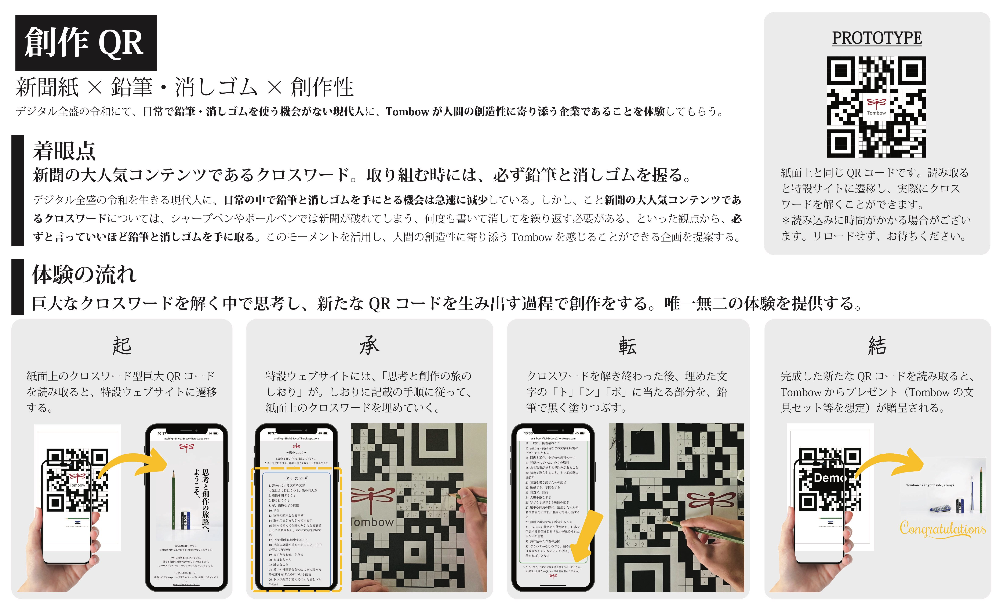

創作QR
Year: 2025
Type: Newspaper Ad
Prize: 第73回 朝日広告賞〈一般公募・デジタル連携の部〉, -
第73回 朝日広告賞〈一般公募・デジタル連携の部〉出品作品
広告主： トンボ鉛筆
課題： TOMBOWの文具のブランド広告
オリエンテーション： TOMBOWの文具は人間が何かを生み出すときにいつもそばにいるパートナーでありたい、という思いを表現してください。
段数： 15段広告
新聞の大人気コンテンツであり、現代人が日常の中で鉛筆と消しゴムを使う貴重なモーメントでもある、「クロスワード」に着目。巨大なクロスワード兼QRコードが生活者自身の手で新たなQRコードへ生まれ変わり、創作活動のパートナーとしてのTOMBOWをダイレクトに感じられる体験設計とした。
Entry for the 73rd Asahi Advertising Award – General Public Submission / Digital Integration Category
Advertiser: Tombow Pencil Co.
Assignment: Brand advertisement for Tombow stationery
Orientation: Express the idea that Tombow products are always by your side as creative partners whenever something is being made
Format: Full-page newspaper advertisement (15 columns)
We focused on the newspaper crossword puzzle, a beloved feature and one of the few remaining moments in everyday life where people still use pencils and erasers. The ad featured a giant crossword puzzle that also functions as a QR code. As readers solve the puzzle using a pencil and eraser, the grid transforms into a new QR code, created by their own hand. Users are taken to a analog & digital integrated experience that deepens their engagement with the brand—positioning Tombow as an essential, hands-on partner in everyday creativity.
Kodai Nagura / 名倉 航大
Ryushiro Sakamoto / 坂本 龍士郎
